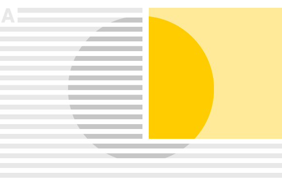
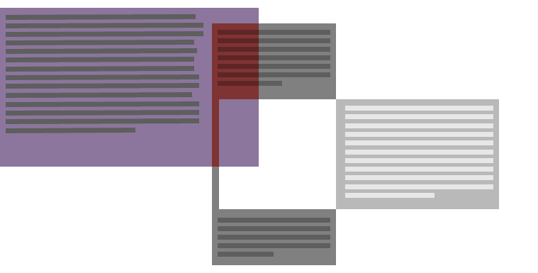

Building Light & Responsive
GIS Web Apps
2014 NW Esri Conference
Blair Deaver / @bcd_mtbTopics
What is responsive design?
Why should I care?
What are lightweight applications?
How do I build geospatial applications with a small application footprint?
How do I measure my progress?
Fast is never fast enough. GIS application diet tips.
Responsive Design

"Responsive web design (RWD) is a web design approach aimed at crafting sites to provide an optimal viewing experience—easy reading and navigation with a minimum of resizing, panning, and scrolling—across a wide range of devices (from mobile phones to desktop computer monitors." - Wikipedia
Not Responsive
Responsive
Why?
mobile first
The How?


Building Light
background-blend-mode property. It is not supported in this browser. Learn how to get a capable browser.
simple alpha compositing
blend-mode: overlay
source
backdrop
blended result
Background Blending
/* blend background images of the same element */
.element {
background: url(image1.jpg), url(image2.jpg);
background-color: rgba(215, 120, 25, 0.7);
background-blend-mode: overlay;
}
Blend modes
- normal
- screen
- multiply
- overlay
- darken
- lighten
- color-dodge
- color-burn
- hard-light
- soft-light
- difference
- exclusion
- hue
- saturation
- color
- luminosity
Element Blending
/* blend heading with container */
h2 {
mix-blend-mode: difference;
}
.container {
background-image: url(texture.png);
}
Scratch
HOLA!
CSS Blend Modes Status
W3C Candidate Recommendation - Adobe, Canon

CSS Masking
clipping vs masking
clip-path: circle(25% at 50% 50%);
-webkit-clip-path property. It is not supported in this browser. Learn how to get a capable browser.
clip-path: ellipse(50% 40% at 50% 50%);
-webkit-clip-path property. It is not supported in this browser. Learn how to get a capable browser.
clip-path: polygon(nonzero, 955px 405px, 483px 212px, 1px 400px, 0px 500px, 956px 500px);
-webkit-clip-path property. It is not supported in this browser. Learn how to get a capable browser.
Clipping with SVG
.element {
-webkit-clip-path: url(#clipping);
}
<svg>
<clipPath id="clipping">
<circle cx="50" cy="50" r="10"/>
</clipPath>
</svg>
Masking
.element {
/* use an image as a mask */
mask-image: url(mask.png);
}


Masking with SVG
.element {
/* use a <mask> element as mask */
mask-image: url(#mask);
}
<svg>
<mask id="mask">
<circle cx="50" cy="50" r="10"></circle>
</mask>
</svg>
HOLA!
CSS Masking Status
W3C Working Draft - Adobe, Mozilla, Google
Shapes in CSS
CSS Shapes
Shape Inside
/* wrap the content inside a circle */
#content {
shape-inside: circle(10em at 50% 50%)
}

Shape Outside
#coffee {
float: left;
shape-outside: circle(10em at 50% 50%);
}

Complex shapes
.content{
/* shape defined by points of a polygon */
shape-inside: polygon(x1, y1 x2, y2 ... );
}
.content{
/* shape defined by the transparency of an image */
shape-inside: url(image.png);
shape-image-threshold: 0.5;
}
CSS Shapes status
W3C Candidate Recommendation - Adobe, Microsoft
CSS Blending
CSS Masking
CSS Shapes